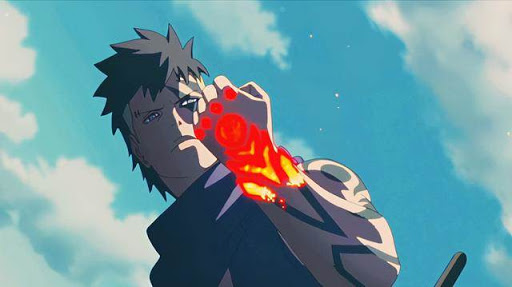

角色介紹
宇智波紗羅妲
宇智波佐助和春野櫻的女兒，第七班中的唯一女性，戴著紅框的眼鏡，被鳴人形容為「氣質像母親小櫻，容貌尤其是眼睛的部分很像父親佐助」，繼承父親的寫輪眼、母親的優秀頭腦包括査克拉怪力。她是在父母外出旅行時，緊急在大蛇丸南方據點由香燐幫忙接生，由她贈送紅框眼鏡。但她記不得這段經歷，加上父親始終不回家，她因此一度懷疑自己並不是父母所生，以至於引發家庭矛盾以及自己的寫輪眼開眼，直到後來才澄清誤會。這段旅程中近距離見識到身為七代火影的漩渦鳴人之強大實力，讓她憧憬並嚮往著鳴人，從此立下當上火影的目標。她遺傳父親的冷酷與慎重的個性以及母親認真又堅強的個性，在忍者學校期間身為女生的領袖，表面上和慕留人的關係並不怎麼好。但私底下特別留意慕留人，她們在「父親很少回家」這一點上有共同語言，並且都希望以彼此的父親為榜樣去奮鬥，成為像他們一樣的優秀忍者。兩人加入第七班後改變以往的水火不容，很快變成默契十足、互相信任的夥伴。成為下忍後無時不刻地修煉，開始慢慢掌握各種寫輪眼瞳術、近戰及忍術技巧，在一次戰鬥中捨身保護慕留人而開啟雙鉤玉寫輪眼。
漩渦慕留人
七代火影·漩渦鳴人和日向雛田的兒子，從忍者學校畢業後與紗羅妲、巳月、和擔任指導上忍的木葉丸共同組成小隊。容貌像父親，兩邊臉頬上各有兩條和父親一樣的貓鬚紋路。忍者服裝為外面是純黑，裡面是洋紅色的外套，另外戴著螺絲形狀的吊飾。右眼有著名為「淨眼」的獨特瞳術，可以看到特殊査克拉流動，但本人對這種特殊瞳術不熟悉、且始終無法自如使用。自童年起就對父親鳴人就任火影後造成的公務繁忙、極少回家而反感，繼承父親愛惡作劇的特質、盡全力吸引父親的注意（例如在火影顔岩上塗鴉）。即便如此，他仍然是會替朋友與家人著想的個性，具有強烈的夥伴意識與說服力。擁有當忍者的強大天賦，和鳴人一樣擅長影分身，極限是四個分身。卻討厭所謂的努力，因此絲毫不想過修行，同時缺少團隊合作的精神與上進心。一直到中忍考試時才得知自己實力不濟，但為了得到父親讚許不惜靠科學忍具來作弊取勝，被父親識破後一度失去當忍者的資格。但緊接著村子受到大筒木一族侵襲，意識到自己完全不成熟，親眼目睹父親捨己為人而徹底改變對父親的看法，並最後在師父佐助的指導下，奮力擊敗強大的大筒木桃式而重拾忍者身份，從此一改過去的想法，尊敬身為火影的父親，同時下定決心想要成為像佐助一樣「支撐著火影」的強大忍者。經過與大筒木桃式的一戰後，右掌出現神秘「楔」印記，並曾經被桃式稱作為「人類之子」，手上的印記時常為他帶來思索，同時會展現過於常人的強大力量。
巳月
第七班的一員，在慕留人的同期之中是一名擁有眾多謎團的少年，經常和慕留人一同行動。原名「巳坯」（代表蛇之容器），真實身份是由大蛇丸以複製技術完善的人造人之一，外表為白髮以及如大蛇丸一樣的琥珀色眼睛，在知識理論方面是天才。口氣雖然像個大人，但欠缺一般常識的發言，因此起初會讓周遭的人們感到驚訝，有讓人覺得不可思議與不通人情的個性。一開始以音忍者村轉校生的身份轉入忍者學校時不太關注他人，甚至沒感覺自己過於招搖，在必要情況下覺得殺人是可行的想法，直到和慕留人的接觸而大有變化。與如同親人關係的大蛇丸經常保持聯繫，並且將慕留人視為自己的「太陽」，經過長期對慕留人的觀察已對此確信無疑。畢業後成為下忍跟慕留人和紗羅妲組成第七班，具有能召喚蛇的通靈之術、以及會用風遁與雷遁等忍術。同時能使用白蛇仙人模式，然而基於仙人化會對身體造成的巨大負擔而被大蛇丸限制使用。一度對自己身為人造人的身份仍然到疑惑的一面，被岩忍者村誕生的人造人五人眾邀請加入其勢力，以分享關於完美人造人技術的信息。「叛離」村子的他受到慕留人與紗羅妲追隨，但後來證實他僅是想獨自調查敵人情報，還以此尋求自己的真正意志是什麼，在關鍵時刻重回夥伴身邊撥亂反正，在事件結束後嚮慕留人與紗羅妲致歉，即使身為大蛇丸之子的身份被發現，但澄清誤會後得到諒解，在精神上也得到成長。
猿飛木葉丸
第七班的指導上忍老師，已故三代火影·猿飛蒜山的孫子，被慕留人叫作「大哥」，對慕留人愛護有加。兒時尊敬慕留人之父漩渦鳴人並尊他為師，他也自稱是其得意門生兼競爭對手。擅長火遁和風遁，還在少年時代就跟鳴人學會影分身與螺旋丸，並繼承祖父的猿飛族秘傳通靈之術「猿猴猿羅」以及師傅漩渦鳴人的妙木山秘傳通靈之術「蝦蟆吾郎」，此外還會叔父猿飛阿斯瑪擅長利用査克拉刀施展的體術。

川木
謎一般的少年，跟神秘「殼」組織有著巨大聯繫，左眼下方印有羅馬數字「Ⅸ」，跟慕留人一樣身為「楔」印記擁有者。從小是一名一無所有的「空殼」，在家中備受父親虐待，造成他的一絲反社會人格，不久後被次元花高價將他買走，作為他眾多小孩實驗品的其中之一，最後成為唯一跟楔的力量成功結合的人。從此成為次元至關重要的「容器」，被他訓練武藝以及楔的使用，稍有不慎就會受懲處。乘坐「殼」組織的飛艇轉移過程中墜毀在火之國境內，期間試圖逃脫組織魔掌而首次跟慕留人一行人交涉。因楔印記跟慕留人產生「共鳴」，使他擊潰組織的追兵後被帶回木葉村，因鳴人同情他的遭遇而被他帶回家跟慕留人、雛田和向日葵一起生活。起初桀驁不馴的個性而屢次跟慕留人發生激烈衝突，一直到組織的內陣德爾塔闖入木葉村找尋他，在情急之下縱身犧牲自己的右臂救下即將被殺的鳴人和向日葵。英勇舉動使鳴人一家對他心存感激，隨著跟鳴人一家的相處也逐漸變得平易近人，開始被慕留人視為「兄弟」一般看待。拜鳴人為師後開始學習忍術等等技巧，此過程讓他更加熟練如何運用楔的力量。但隨著次元靠楔印記的時空間忍術突襲鳴人的家，造成鳴人跟次元正面交鋒後失聯，使他的存在引起鹿丸的懷疑。為了證明自己，他帶領第七班穿越至次元的異空間，聯手打敗組織內陣襤褸而救出鳴人。後來隨著組織內部發生叛動、造成大筒木一式以次元的身體重生，使他暫且脫離楔的附體。經過幾番波折，當一式準備給他重新灌上印記時，運用學會的影分身而矇騙一式、拖延足夠時間等到一式晴明耗盡。
更多角色在這